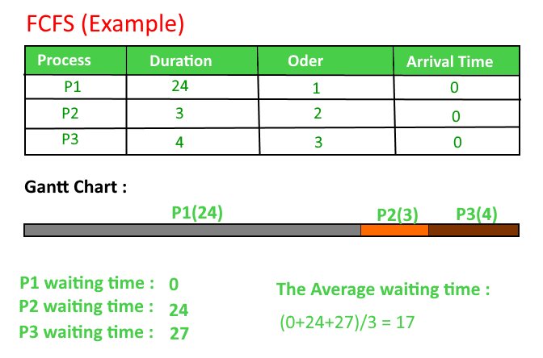

Given n processes with their burst times, the task is to find average waiting time and average turn around time using FCFS scheduling algorithm.
First in, first out (FIFO), also known as first come, first served (FCFS), is the simplest scheduling algorithm. FIFO simply queues processes in the order that they arrive in the ready queue.
In this, the process that comes first will be executed first and next process starts only after the previous gets fully executed.
Here we are considering that arrival time for all processes is 0.
How to compute below times in Round Robin using a program?
- Completion Time: Time at which process completes its execution.
- Turn Around Time: Time Difference between completion time and arrival time. Turn Around Time = Completion Time – Arrival Time
- Waiting Time(W.T): Time Difference between turn around time and burst time.
Waiting Time = Turn Around Time – Burst Time
In this post, we have assumed arrival times as 0, so turn around and completion times are same.

Implementation:
1- Input the processes along with their burst time (bt).
2- Find waiting time (wt) for all processes.
3- As first process that comes need not to wait so
waiting time for process 1 will be 0 i.e. wt[0] = 0.
4- Find waiting time for all other processes i.e. for
process i ->
wt[i] = bt[i-1] + wt[i-1] .
5- Find turnaround time = waiting_time + burst_time
for all processes.
6- Find average waiting time =
total_waiting_time / no_of_processes.
7- Similarly, find average turnaround time =
total_turn_around_time / no_of_processes.
// C++ program for implementation of FCFS
// scheduling
#include<iostream>
using namespace std;
// Function to find the waiting time for all
// processes
void findWaitingTime(int processes[], int n,
int bt[], int wt[])
{
// waiting time for first process is 0
wt[0] = 0;
// calculating waiting time
for (int i = 1; i < n ; i++ )
wt[i] = bt[i-1] + wt[i-1] ;
}
// Function to calculate turn around time
void findTurnAroundTime( int processes[], int n,
int bt[], int wt[], int tat[])
{
// calculating turnaround time by adding
// bt[i] + wt[i]
for (int i = 0; i < n ; i++)
tat[i] = bt[i] + wt[i];
}
//Function to calculate average time
void findavgTime( int processes[], int n, int bt[])
{
int wt[n], tat[n], total_wt = 0, total_tat = 0;
//Function to find waiting time of all processes
findWaitingTime(processes, n, bt, wt);
//Function to find turn around time for all processes
findTurnAroundTime(processes, n, bt, wt, tat);
//Display processes along with all details
cout << "Processes "<< " Burst time "
<< " Waiting time " << " Turn around time\n";
// Calculate total waiting time and total turn
// around time
for (int i=0; i<n; i++)
{
total_wt = total_wt + wt[i];
total_tat = total_tat + tat[i];
cout << " " << i+1 << "\t\t" << bt[i] <<"\t "
<< wt[i] <<"\t\t " << tat[i] <<endl;
}
cout << "Average waiting time = "
<< (float)total_wt / (float)n;
cout << "\nAverage turn around time = "
<< (float)total_tat / (float)n;
}
// Driver code
int main()
{
//process id's
int processes[] = { 1, 2, 3};
int n = sizeof processes / sizeof processes[0];
//Burst time of all processes
int burst_time[] = {10, 5, 8};
findavgTime(processes, n, burst_time);
return 0;
}
Output:
Processes Burst time Waiting time Turn around time 1 10 0 10 2 5 10 15 3 8 15 23 Average waiting time = 8.33333 Average turn around time = 16
Important Points:
- Non-preemptive
- Average Waiting Time is not optimal
- Cannot utilize resources in parallel : Results in Convoy effect (Consider a situation when many IO bound processes are there and one CPU bound process. The IO bound processes have to wait for CPU bound process when CPU bound process acquires CPU. The IO bound process could have better taken CPU for some time, then used IO devices).
Source : http://web.cse.ohio-state.edu/~agrawal/660/Slides/jan18.pdf
In Set-2 we will be discussing the processes with different arrival time.